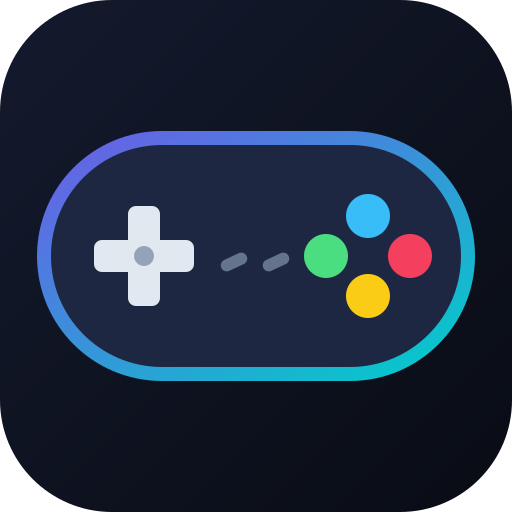

1. Abre Open Emulator en tu Lenovo Tab 11
Asegúrate de que tu PC y tu tablet estén en el mismo Wi-Fi, abre iniciar_emulador.bat en Windows y escribe esta dirección en Chrome en tu tablet:
Detectando dirección de red local...

Multiconsola Retro · Lenovo Tab 11
Arrastra archivos ROM o toca para elegir desde tu tablet (SNES, NES, GBA, GB, N64, NDS, Genesis, PS1, Arcade, ZIP).
10 sistemas listos con núcleos WebAssembly, guardado rápido (Save States), controles táctiles y mando Bluetooth.
El modo adaptativo de EmulatorJS permite mover y escalar cada botón en pantalla desde el ícono de engranaje al jugar.
Oculta barras de Android al iniciar un juego para aprovechar las 11 pulgadas completas.
Arranca la consola directo sin esperar un segundo toque en el botón Play.
Usa stable para máxima estabilidad o latest para las mejoras más recientes.
Conecta un mando Xbox, PlayStation, 8BitDo o genérico por Bluetooth a tu Lenovo 11 y presiona cualquier botón.
Los juegos que agregas desde tu Lenovo 11 se guardan localmente en IndexedDB para que siempre estén disponibles.
Asegúrate de que tu PC y tu tablet estén en el mismo Wi-Fi, abre iniciar_emulador.bat en Windows y escribe esta dirección en Chrome en tu tablet:
roms/ del proyecto y presiona ↻ Sincronizar PC en la tablet..sfc/.smc) para Super Mario World, Super Mario Kart, Donkey Kong Country y Prince of Persia; NES (.nes) y N64 (.z64) para el resto de clásicos.